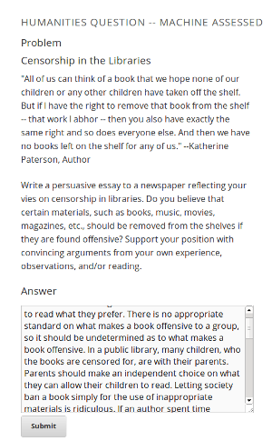

Freeform Grading at edX
Freeform Grading Overview
What is freeform grading?
- Freeform grading is the automatic scoring of student free text responses.
Why is freeform grading important?
- Freeform grading allows humanities courses to be taught using open ended questions.
- Freeform grading can provide feedback to students in a variety of ways that "closed-ended" question types cannot.
- Allowing students to interact with open ended questions has significant pedagogical value.
What does edX have to allow freeform grading?
- The learning sciences team at edX has been developing several prototype grading technologies to score free form responses.
- The development has been user-driven, and all of the technologies offer significant flexibility.
Freeform Grading at edX
Self Assessment
- Self assessment allows students to answer a question, see a rubric, and rate themselves.
- Has pedagogical value for the student, and requires no grading effort from course staff.
- Several self assessment questions were piloted in the Fall of 2012 with positive student response.
Machine Learning (ML) Assessment
- ML assessment involves students submitting a response, and an algorithm scoring it.
- ML creates a model using 100 course staff graded responses. This model is then used to automatically grade students.
- Somewhat equivalent to course staff grading each student individually, but with much less effort.
- Also piloted in the Fall of 2012 (more on this in the coming slides).
Freeform Grading at edX Continued
Peer Assessment
- Peer assessment involves students giving each other scores and feedback
- Significant pedagogical value for both the student being graded and the grader.
- Graders first learn how to grade the problem by looking at instructor graded examples.
- Features such as smart peer matching and user flagging of inappropriate submissions address concerns with previous online peer grading implementations.
Flexible Assessment Types
- Any of the previous 3 assessement types can be used together.
- A single student response can pass through any combination of graders.
- For example, a response could be first peer graded, and then ML graded, after which students could self-assess their performance.
Current Student Problem Interface
| Student Submission |
Student Self-Assesses |
External Grader Results |
|  |
 |
 |
2012 Fall ML Pilot
Overview
- ML grading and self assessment were piloted in a chemistry course (3.091x) to gauge student reactions and to give us data to strengthen our products.
Results
- Self Assessment
- Student reaction to self-assessment was positive.
- Heavily used by course staff due to simplicity of implementation.
- ML Grading
- The ML grading product used was an early prototype.
- Student surveys indicated that the ML score was very accurate, but that there needed to be more feedback from the ML.
Takeaways/Lessons
- Give students better feedback from all grader types.
- Give students a way to discuss their scores (we incorporated our survey mechanism late).
Pilot Student Data

Pilot ML Accuracy

Questions?